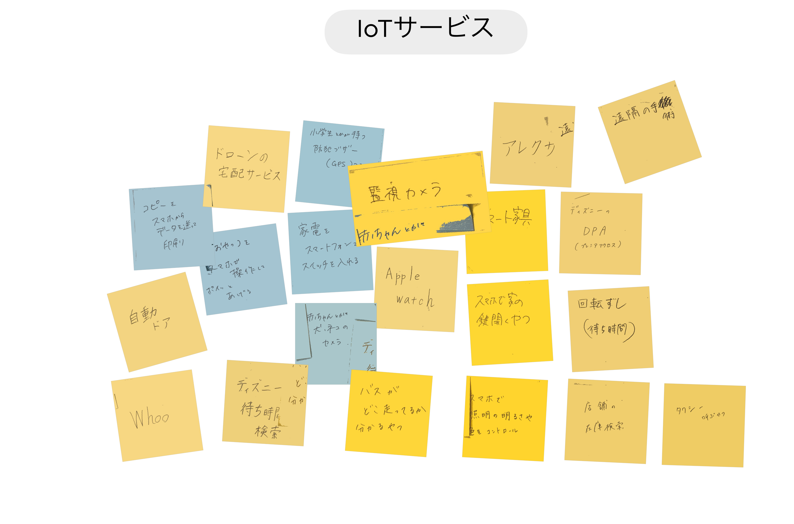
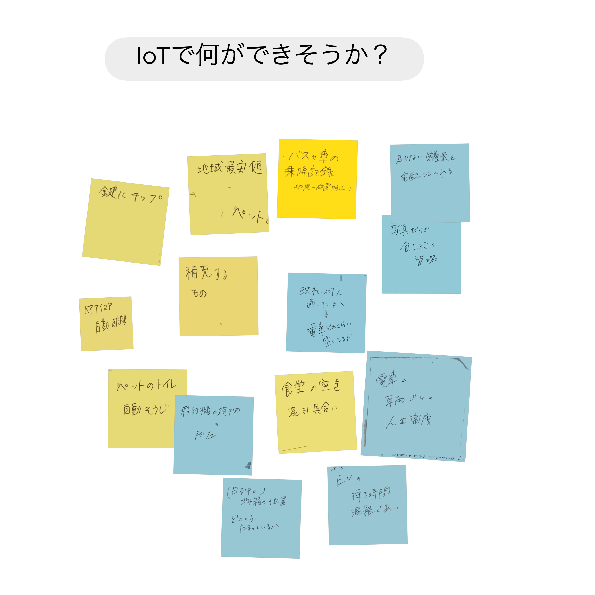
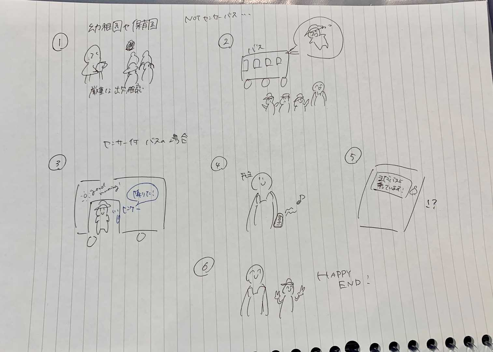

IoTについて
IoTとは
IoT（Internet of Things）とは、インターネットに接続された様々な種類のデバイスや機器が互いに通信し、相互作用することで、
自動的に情報を収集、処理、交換することができる技術のこと。
IoTは、スマートホームやスマート都市、産業用途など、様々な分野で利用されており、センサー、アクチュエータ、通信機能などの技術が使われている。
IoTにより、機器同士が自動的にデータを共有し、効率的に処理することができるため、ビジネスプロセスの改善や生活の利便性の向上など、様々な利点がある。
参照ChatGPT
IoTサービスの例(グループワーク)

IoTで何ができそうか？
IoTサービスのアイデア(グループワーク)

IoTサービスのアイデア「センサー付きのバスや車」
昨年少し問題になった幼児の車内取り残しに注目し、センサー付きの送迎バスや自家用車があれば良いのではないかと考えた。
車の出入り口にセンサーを付けたり、重さを感知することで車内にいる人数を把握し、スマホアプリ等と連携させる
車を運転していないときに長時間乗っている人がいる場合に通知する仕組みがあれば、取り残しを防げるのではないか
また、温度を感知するセンサーとも連携すれば車内の熱中症も防げるのではないかと考えた。
ストーリーボード

前のページに戻る